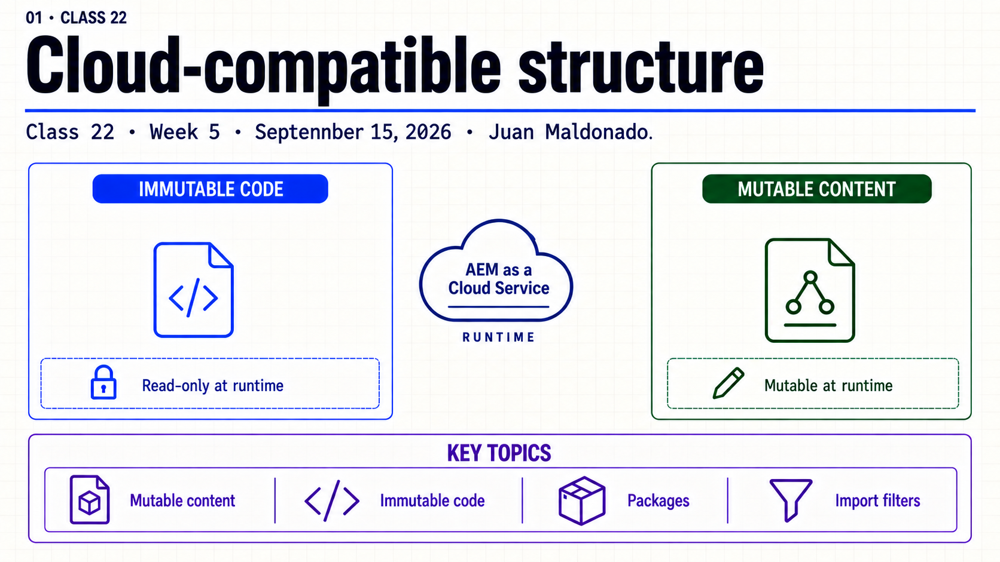
Topic summary
AEM Cloud distinguishes runtime-immutable application code from mutable repository content. A component implementation, an OSGi configuration and an authored title have different owners and deployment responsibilities even when they contribute to the same rendered page.
A package is an installation contract. Its type, embedded artifacts, filter scope and import mode determine how its payload affects an existing repository. A useful local check compares before and after an author edit and reinstallation, then inspects the actual ZIP and installation log.
- Separate /apps and /libs runtime boundaries from mutable content.
- Map core, ui.apps, ui.config, ui.content, all and dispatcher responsibilities.
- Keep code and mutable payloads in separate packages.
- Read the effective filter in the built artifact.
- Compare replace, merge_properties and update_properties on ordinary properties.
- Prove preservation on an already-authored repository.
30-minute agenda
| Time | Slides | Focus |
|---|---|---|
| 0–3 | 1–2 | Opening and two change paths. |
| 3–9 | 3–5 | Repository, modules and packages. |
| 9–17 | 6–8 | Filters, import modes and ownership. |
| 17–25 | 9–10 | Prepared local lab and evidence. |
| 25–28 | 11 | Key takeaways. |
| 28–30 | 12 | Questions. |
Complete slide deck
Copy each complete image to PowerPoint or download its PNG. The practical source files and instance steps follow the deck.
{kind=link}
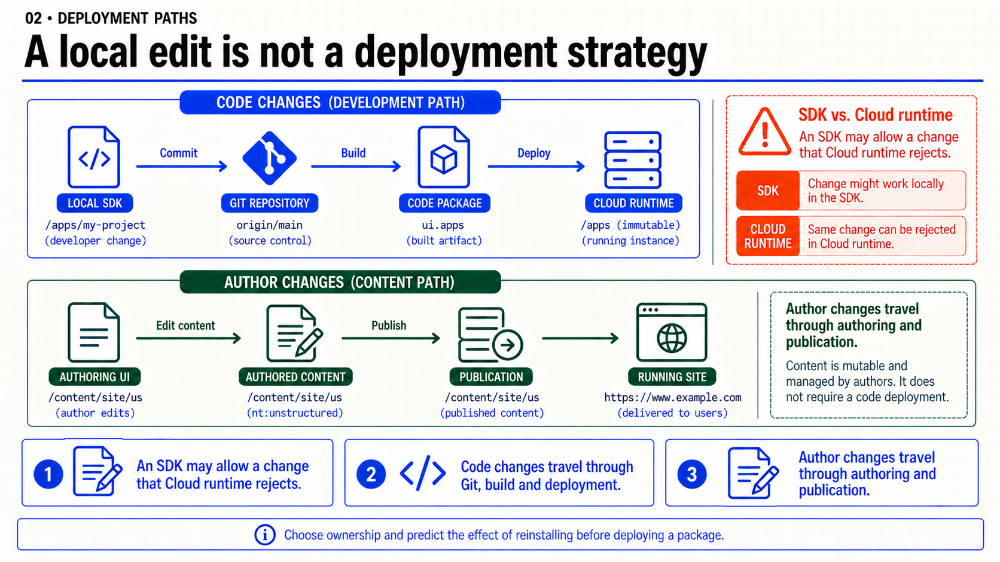
{kind=link}
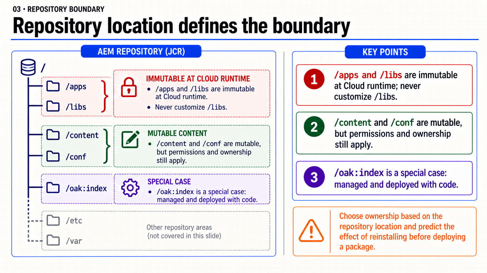
{kind=link}
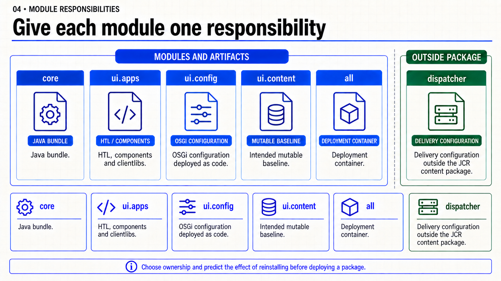
{kind=link}
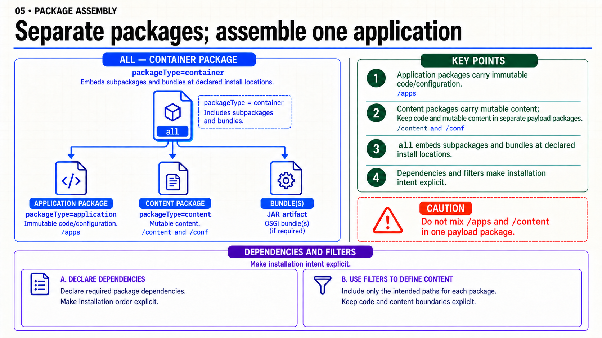
{kind=link}
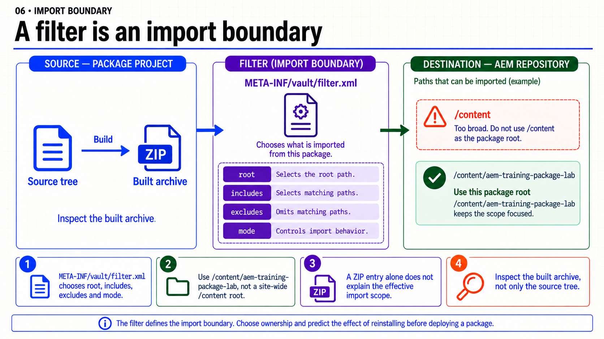
{kind=link}
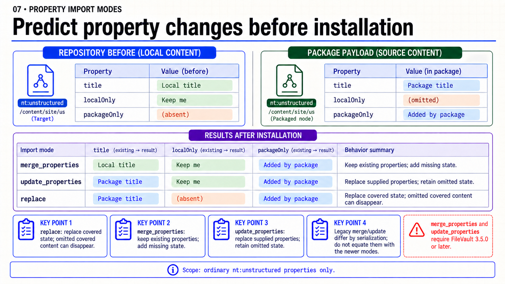
{kind=link}
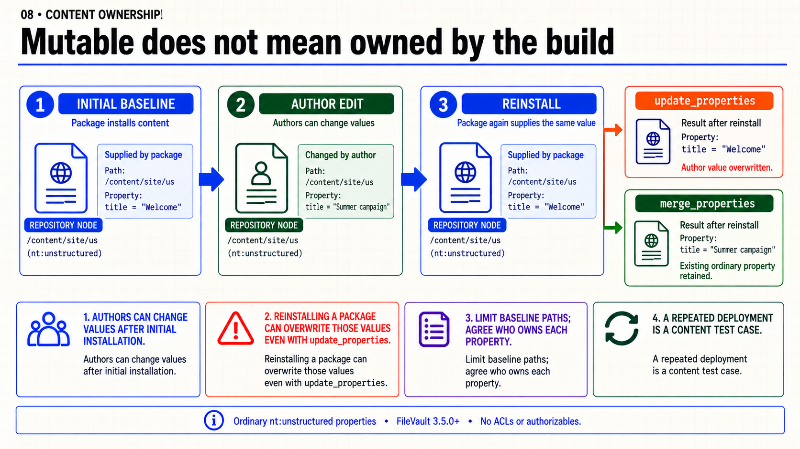
{kind=link}
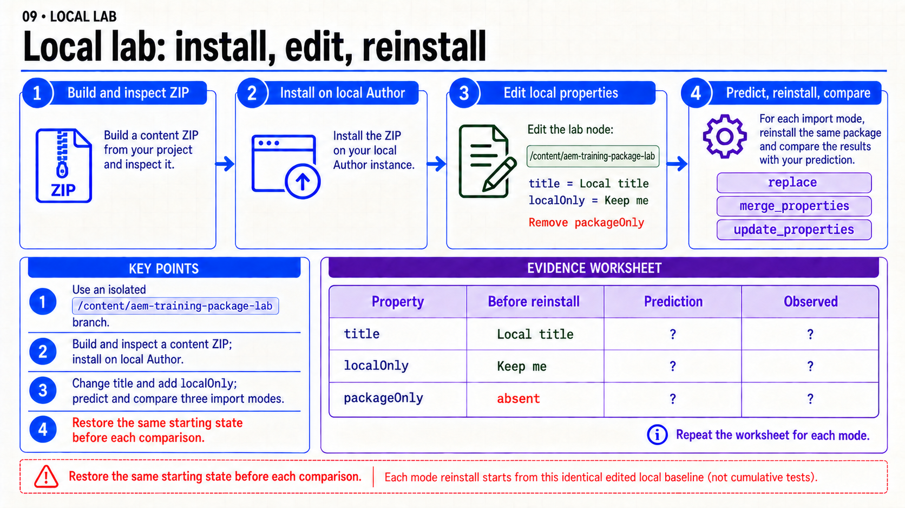
{kind=link}
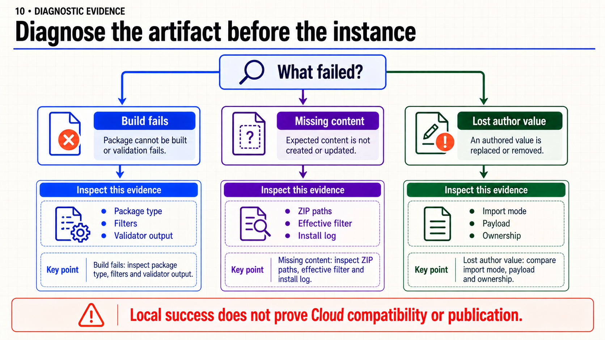
{kind=link}
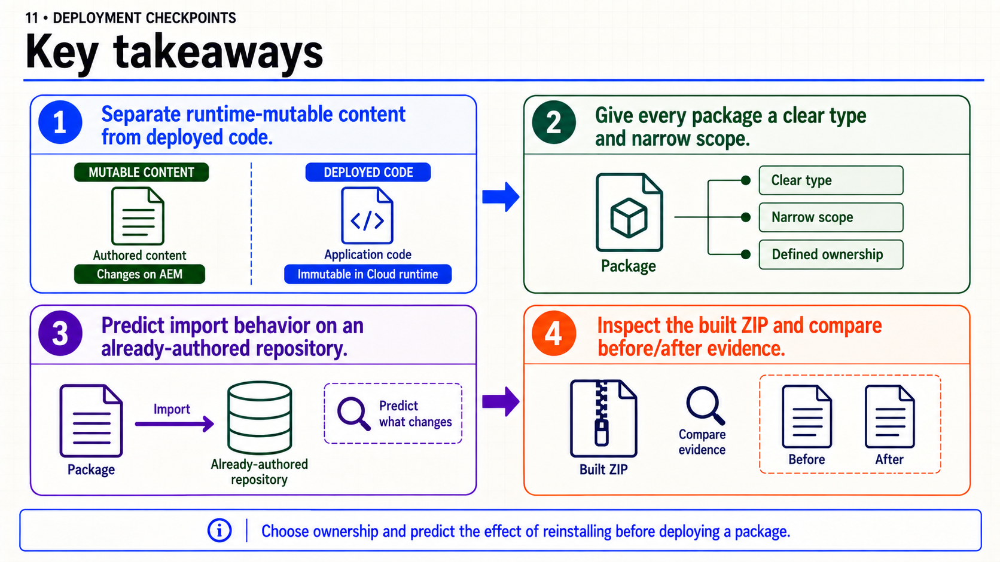
{kind=link}
{kind=link}
Práctica local · Qué hace un paquete al reinstalarse (25–35 min)
Objetivo: comparar tres modos sobre un nodo nt:unstructured, sin templates, bundles ni cambios en /apps. Se crea un ZIP FileVault mínimo; XML no se compila como Java, se empaqueta y se importa. Necesitas el comando jar del JDK y un Author SDK local con Package Manager y CRXDE Lite. Los modos merge_properties y update_properties requieren FileVault 3.5.0 o posterior: comprueba la versión del bundle org.apache.jackrabbit.vault en /system/console/bundles.
Ubicación: crea una carpeta package-lab en tu repositorio de práctica y coloca estos tres archivos dentro. No mezcles META-INF dentro de jcr_root. Esta carpeta es un laboratorio aislado, no sustituye los módulos ui.content y all de tu aplicación.
Archivo: META-INF/vault/filter.xml
<?xml version="1.0" encoding="UTF-8"?>
<workspaceFilter version="1.0">
<filter root="/content/aem-training-package-lab" mode="merge_properties"/>
</workspaceFilter>
Archivo: META-INF/vault/properties.xml
<?xml version="1.0" encoding="UTF-8"?>
<!DOCTYPE properties SYSTEM "http://java.sun.com/dtd/properties.dtd">
<properties>
<entry key="group">aem-training</entry>
<entry key="name">package-lab</entry>
<entry key="version">1.0.0</entry>
<entry key="packageType">content</entry>
<entry key="description">Local lab: ordinary content property import modes</entry>
</properties>
Archivo: jcr_root/content/aem-training-package-lab/.content.xml
<?xml version="1.0" encoding="UTF-8"?>
<jcr:root xmlns:jcr="http://www.jcp.org/jcr/1.0"
jcr:primaryType="nt:unstructured"
title="Package title"
packageOnly="Added by package"/>
Construir e inspeccionar el ZIP
Desde la carpeta package-lab que contiene META-INF y jcr_root:
jar --create --file ../package-lab.zip --no-manifest -C . META-INF -C . jcr_root
jar --list --file ../package-lab.zip
La lista debe contener META-INF/vault/filter.xml, META-INF/vault/properties.xml y jcr_root/content/aem-training-package-lab/.content.xml. Puedes abrir el ZIP con tu explorador y revisar el filtro antes de instalarlo. No incluyas un directorio package-lab/ adicional dentro del ZIP.
Instalar y establecer una línea base
- En
http://localhost:4502/crx/de/index.jsp, comprueba que/content/aem-training-package-labno contiene trabajo previo. Si existe y no es tu laboratorio, usa otro nombre y actualiza la ruta del filtro y la carpeta del payload de forma coherente. - En
http://localhost:4502/crx/packmgr/index.jsp, usa Upload Package, cargapackage-lab.zip, revisa el grupoaem-trainingy usa Install. El modo inicial esmerge_properties. - En CRXDE Lite refresca el árbol y selecciona
/content/aem-training-package-lab. Deben aparecertitle=Package titleypackageOnly=Added by package. Este nodo no es una página Sites y no se espera que renderice HTML. - Prepara la línea base para cada ensayo: cambia
titleaLocal title, añade una propiedad StringlocalOnly=Keep mey elimina sólopackageOnlysi existe. Pulsa Save All. No cambiesjcr:primaryType. - Antes de reinstalar, copia estos tres valores iniciales a tu evidencia. Cada ensayo debe comenzar exactamente en ese estado.
Comparar los modos
- Reinstala el paquete original con
merge_properties. Confirma quetitlesigue local, quelocalOnlyse conserva y que aparecepackageOnly. - Restablece la línea base del paso 4. En tu archivo fuente
filter.xml, cambia sólomode="merge_properties"amode="update_properties". Reconstruye el ZIP con el mismo comando. En Package Manager vuelve a cargarlo con Force Upload para reemplazar el archivo de la misma versión; revisa el filtro recién cargado y reinstala. No uses Build en Package Manager: exportaría el estado actual y cambiaría el payload del experimento. - Restablece otra vez la línea base. Cambia el modo a
replace, reconstruye, carga y reinstala siguiendo el mismo procedimiento. Comprueba únicamente el nodo aislado del laboratorio.
| Modo | title después | localOnly después | packageOnly después |
|---|---|---|---|
| merge_properties | Local title | Keep me | Added by package |
| update_properties | Package title | Keep me | Added by package |
| replace | Package title | Ausente | Added by package |
Interpretación: update_properties conserva lo omitido, pero sí sobrescribe un valor authored incluido en el paquete. replace también puede eliminar contenido cubierto que falta en el payload. Estos resultados se refieren a propiedades ordinarias de este nodo; ACLs, usuarios, binarios y UUIDs necesitan revisar sus reglas específicas. No cambies los modos a los legacy merge/update suponiendo que son equivalentes.
Aceptación: ZIP inspeccionado, versión FileVault registrada y una tabla de valores observados para los tres ensayos. Si un modo es rechazado, conserva el error y verifica la versión; no lo cambies por replace sólo para lograr una instalación verde.
Volver al proyecto: identifica en tus POM qué contiene ui.apps, ui.content, ui.config y all; abre el ZIP generado por tu build y localiza los filtros de los subpaquetes. Anota qué pasaría con un título modificado por un autor si reinstalas. No amplíes los filtros de la aplicación para incluir todo /content.
Limpieza: al finalizar, elimina sólo /content/aem-training-package-lab y el paquete aem-training:package-lab de tu Author local. Devuelve el filtro fuente a merge_properties si conservarás el ejemplo. No tomes Uninstall como estrategia general de rollback del contenido authored.
Fuentes: workspace filters, modos de importación y propiedades del paquete.